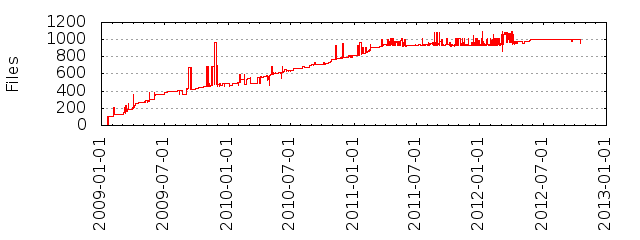

Files
- Total files
- 958
- Total lines
- 21874
- Average file size
- 1815.25 bytes

| Extension | Files (%) | Lines (%) | Lines/file |
|---|
| 49 (5.11%) | 1685 (7.70%) | 34 |
| cnf | 1 (0.10%) | 285 (1.30%) | 285 |
| conf | 4 (0.42%) | 215 (0.98%) | 53 |
| default | 3 (0.31%) | 27 (0.12%) | 9 |
| erb | 222 (23.17%) | 16724 (76.46%) | 75 |
| gd2 | 2 (0.21%) | 0 (0.00%) | 0 |
| gif | 3 (0.31%) | 21 (0.10%) | 7 |
| gz | 2 (0.21%) | 21 (0.10%) | 10 |
| jpg | 2 (0.21%) | 23 (0.11%) | 11 |
| json | 7 (0.73%) | 317 (1.45%) | 45 |
| md | 69 (7.20%) | 6941 (31.73%) | 100 |
| patch | 1 (0.10%) | 13 (0.06%) | 13 |
| pl | 3 (0.31%) | 358 (1.64%) | 119 |
| pm | 4 (0.42%) | 245 (1.12%) | 61 |
| png | 2 (0.21%) | 15 (0.07%) | 7 |
| rb | 558 (58.25%) | 22589 (103.27%) | 40 |
| rdoc | 18 (1.88%) | 1110 (5.07%) | 61 |
| seed | 3 (0.31%) | 32 (0.15%) | 10 |
| sh | 4 (0.42%) | 477 (2.18%) | 119 |
| sql | 1 (0.10%) | 32 (0.15%) | 32 |